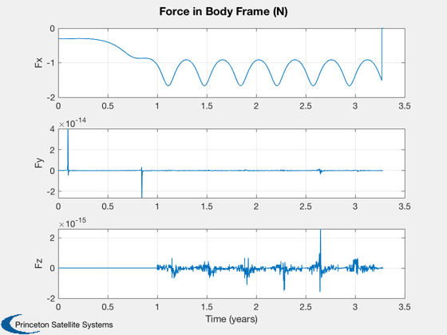

Demonstrate combined simulation for the Solar Polar Imager mission.
Sail is initialized pointing directly towards the sun. The guidance profile performs a reduction in semi-major axis to the target orbit, followed by a rotation in inclination. This is similar to NASA's proposed Solar Polar Imager mission. Try 'FlatCP1Sail.mat' for a nonideal sail.
------------------------------------------------------------------------ See also: FSailCombined SailEnvironment SailDisturbance FOrbitSingle SPIGuidance FlatPlate, QForm, Constant, AssignFHandle, InformDlg, Plot2D, TimeLabl, Date2JD, El2RV, SunV2, QSail, DisturbanceStruct, EnvironmentStruct, ProfileStruct, PlotSailProfile, DisplaySailProperties ------------------------------------------------------------------------
Contents
%--------------------------------------------------------------------------- % Copyright (c) 2006 Princeton Satellite Systems, Inc. % All rights reserved. %--------------------------------------------------------------------------- % Since version 7. %---------------------------------------------------------------------------
Number of days to simulate
%---------------------------
nDays = 1200;
Constants
%---------- au = Constant('au'); muSun = Constant('mu sun');
Place sail in orbit at the Earth
%---------------------------------
el = [au 0 0 0 0 0];
[r,v] = El2RV( el, [], muSun );
jD = Date2JD+200;
[uSun,rS] = SunV2( jD );
q = QSail( uSun, r, v );
w = [0;0;0];
Initialize simulation data structure
%-------------------------------------- [d,p] = InitializeSailSim( jD, 'FlatSail.mat', 'SPIGuidance' ); d = InitializeSailGravity( d, 'sun', muSun ); % Overload mass to obtain desired solar force d.g.mass.mass = 750; % gravity is needed for guidance function d.mu = muSun;
-----------------------
Flat Specular Sail
Sail normal: [1 0 0]
Sail area: 50000 m2
Sail mass: 100 kg
Sail inertia (kg/m2):
833333.33 0 0
0 416666.67 0
0 0 416666.67
Sail characteristic accel: 4.5267 mm/s2
Number of bodies in model: 1
Number of components in model: 1
Sail class components: 1
Sail optical properties
Component Sail:
Specular Front: 1 Back: 1
Diffuse Front: 0 Back: 0
Absorptivity Front: 0 Back: 0
Emissivity Front: 0.03 Back: 0.03

Options - set max step
%----------------------- odeOpts = odeset( 'MaxStep',86400,'abstol',1e-10,'reltol',1e-8); tEnd = nDays*86400; hDlg = InformDlg( 'Integrating...', 'SPICombinedDemo' ); [z, x] = ode113( @FSailCombined, [0 tEnd], [r;v;q;w], odeOpts, p, d ); close(hDlg); xPlot = x'; time = z'; [tPlot,tLbl] = TimeLabl( time );
Extract the profiles from the orbit
%------------------------------------ [p, env, f, tq] = FSailCombined( time, xPlot, p, d ); % Plot results.
Will see the results of the solar force on the orbit.
%------------------------------------------------------------------- PlotSailProfile( p, env, [1;0;0] ); Plot2D(tPlot,QForm(p.q,f.total),tLbl,{'Fx','Fy','Fz'},'Force in Body Frame (N)') %--------------------------------------